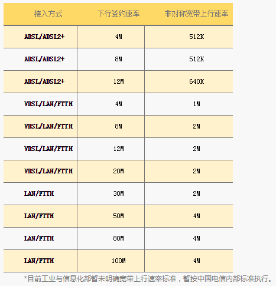
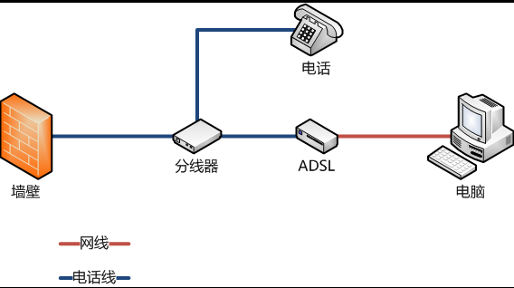

上行速率和下行速率
固定宽带接入速率：是指从宽带接入服务提供商的宽带业务接入点BRAS到用户终端这一段链路上的信息传送速率，一般以kbit/s或Mbit/s为单位。
上行速率是指上传信息的速度，下行速率指的是下载数据的速度。上行宽带和下行宽带是不对称的，一般是下行速度大于上行速度。提供有线宽带产品所标称的4M、8M及50M等带宽均是指的下行速率。
其中还有一个误区，宽带运营商对下行速度的计算单位是Kbps（kilo bit pro second千比特每秒），而电脑实际上网应用中的计算单位是KBps（kilo Byte pro second 千字节每秒）。1字节=8比特。
1Mbps = 1024Kbps = 1024/8 KBps = 128Bps
因此1M的带宽的理论下载速度为128KB每秒。实际大约为50～100KBps（受用户计算机性能，网络设备质量，资源使用情况，网络高峰期，网站服务能力，线路衰耗，信号衰减等多因素影响）。
上行速率比下行速率低的原因：通常情况下，上行速率要比下行速率低，主要是受网络技术及线路质量的约束，同时也是为了防止上行速率过高，对整个网络形成冲击，造成网络阻塞，影响网络安全。
在ADSL时代，因为技术限制，上行速度只有1M左右，即使是后来的VDSL等等理论上也只有2M左右，实际还因为线路原因不可能达到理论最大带宽，同样也是因为xDSL技术限制。虽然现在到了光线时代，理论上来讲，上下行速率是可以完全相同的。但是运营商对上行速率进行了限制。以电信为例：

宽带速率达到多少符合标准：2013年工业与信息化部发布了《互联网接入服务规范》由2013年9月1日正式施行，规范中第十四条规定“有线接入速率的平均值应能达到签约速率的90%”。
ADSL
ADSL（Asymmetric Digital Subscriber Line，非对称数字用户线路），是一种异步传输模式（ATM），它采用频分多路复用技术把普通的电话线分成了电话、上行和下行三个相对独立的信道，从而避免了相互之间的干扰。通常ADSL在不影响正常电话通信的情况下可以提供最高3.5Mbps的上行速度和最高24Mbps的下行速度。
由于受到传输高频信号的限制，ADSL需要电信服务提供商端接入设备和用户终端之间的距离不能超过5公里，也就是用户的电话线连到电话局的距离不能超过5公里。当电信服务提供商的设备端和用户终端之间距离小于1.3公里的时候，还可以使用速率更高的VDSL。
在电信服务提供商端，需要将每条开通ADSL业务的电话线路连接在数字用户线路访问多路复用器（DSLAM）上。而在用户端，用户需要使用一个ADSL终端（和传统的调制解调器（Modem）类似）来连接电话线路。由于ADSL使用高频信号，所以在两端还都要使用ADSL信号分离器（splitter）将ADSL数据信号和普通音频电话信号分离出来，避免打电话的时候出现噪音干扰。
通常的ADSL终端有一个电话Line-In，一个以太网口，有些终端集成了ADSL信号分离器，还提供一个连接的Phone接口。某些ADSL调制解调器使用USB接口与电脑相连，需要在电脑上安装指定的软件以添加虚拟网卡来进行通信。

VDSL
VDSL（英文：Very-high-bit-rate digital subscriber line），又称超高速数字用户线路，是一种非对称DSL，曾是速度最快的xDSL技术，顾名思义较HDSL（高速数字用户线路）为快，通过一对VDSL设备，用作光纤结点到附近用户的最后引线。VDSL允许用户端利用现有铜线获得高带宽服务而不必采用光纤。VDSL和ADSL一样，是以铜线传输的xDSL宽带解决方案家族成员。可以经一对传统用户双绞线在一定服务范围内有效传送下行达12.9Mb/s至52.8Mb/s（实验室理论值最高可达60Mb/s），上行达1.6Mb/s至2.3Mb/s的数据信息。但比起ADSL离固网机房约4公里的距离限制，VDSL有效传输距离只有600米，是“光纤到户”时代前最后一公里的宽带上网解决方案。
VDSL的缺点是传输速度与传输距离成反比，配线质量需相当好。而且VDSL目前还没有一套统一标准，各家所制造的设备互不兼容。
FTTH
光纤到户（Fiber To The Home，FTTH）是一种光纤通信的传输方法。是直接把光纤接到用户的家中（用户所需的地方）。
这种光纤通信方式及策略与FTTN、FTTC、HFC（Hybrid Fiber Coaxial）等也不同，它们都是需要依赖传统的金属电线，包括双绞线及同轴电缆等，作“最后一公里”的信息传输。
中国电信从2011年起在中国大陆各个省会城市实行网络升级，根据各省市实际情况原ADSL用户免费或有偿升级到FTTH。目前上海电信FTTH推进程度较高。在2012年3月31日，中国宽带发展和光网建设高层研讨会上，中国电信上海分公司副总工张军表示，到2014年基本完成整个上海的光网覆盖，90%以上的宽带用户实现FTTH。按照计划，上海市2011年宽带速率达到8M，2012年的宽带要提速到16M，2013年要达到30M，2014年50M。2016年底，上海电信将完成269个小区的千兆宽带接入，2018年实现千兆宽带全市覆盖，千兆宽带接入用户突破百万级，平均接入带宽将从目前的超过50Mbit/s提升至280Mbit/s，用户可感知的下载速率从13Mbit/s升至突破100Mbit/s.